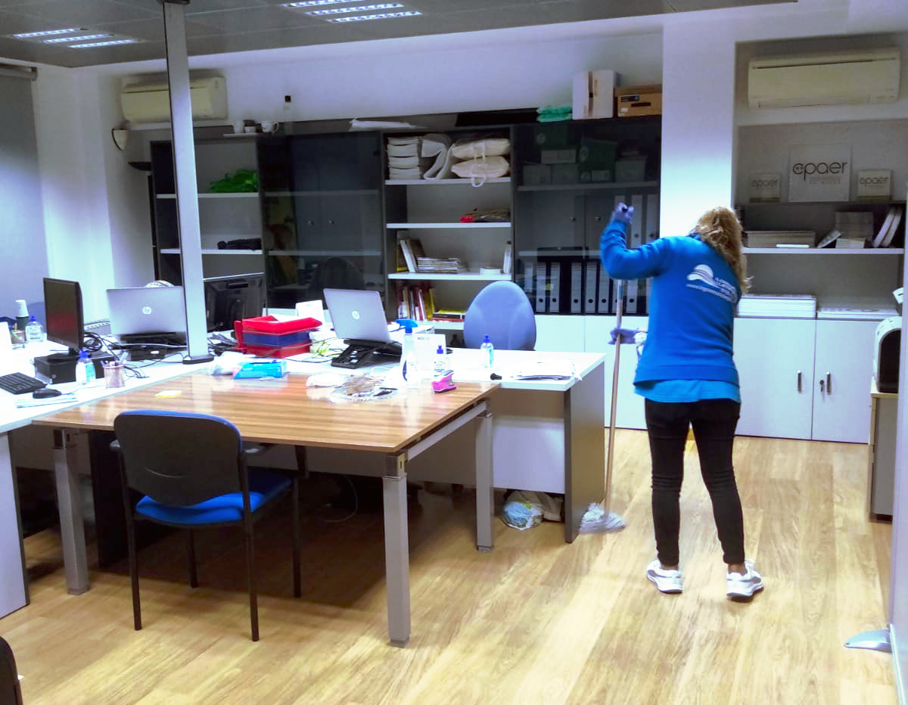

Teléfono de contacto: 600000000 / 9410000000
Correo electrónico: info@logronesadelimpiezas.com
¡Tu empresa de limpiezas de confianza!

Logroñesa de Limpiezas, S.L. lleva más de 20 años en el sector de la limpieza, ofreciendo servicios de limpieza en La Rioja, Álava y Navarra. Nuestra marca ha ido evolucionando a lo largo de estos años e integrando nuevos servicios adaptados a las necesidades actuales del mercado.
Contamos con un equipo humano de calidad, dotados de experiencia y cualificados para desarrollar cualquier servicio de una forma totalmente profesional.
Además de contar con personal de calidad, invertimos en productos y materiales de ultima generación para asegurarnos que el acabado de nuestros servicios se aproxime a la perfección.
Personal de calidad + maquinaria y productos de calidad = Servicio de calidad asegurado
Más sobre nosotros

Servicios de limpieza que realizamos
Desinfección contra el COVID-19 enviviendas, centros de trabajo, negocios u oficinas (desinfecciones manuales, o por métodos de neubolización o pulverizacion).
Limpiezas en alturas (limpieza de tubos en fábricas y centros, techos, limpieza de telarañas altas, fachadas, cristaleras de grandes dimensiones, entre otros elementos)
Mantenimiento de oficinas y locales (desempolvado de mobiliario, limpieza de sanitarios, limpieza de suelos, limpieza de cristales, entre otros servicios)
Mantenimiento de comunidades (limpieza de rellanos, escaleras y portales, mantenimiento de zonas comunes, mantenimiento de cristales, limpieza de garaje, entre otros servicios)
Limpiezas puntuales o de obras en viviendas, locales o zonas de trabajo. (Servicios de limpieza adaptados a cada petición)
Limpiezas en siniestros (incendios, desprendimientos, atascos, inundaciones, vandalismo, entre otros)
Limpieza y desinfección en casas particulares con problemas de diógenes o post-muerte.
Limpieza de cristaleras en escaparates, viviendas, oficinas, locales, entre otros centros.
Pulidos y abrillantados de suelos en pabellones, fábricas, comunidades, entre otros centros.